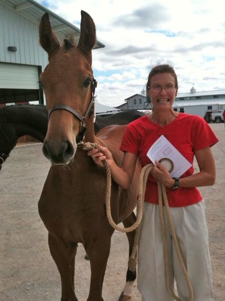

| Calypso Jazz (American Holsteiner Horse Association) Coconut Grove (Grand Prix jumper stallion standing at October Hill Farm) X Mary 1 (imported Holsteiner) Born May 15, 2011 Jazz is with Mykal Robinson being started under saddle as of March 2014. In October 2011 we took Jazz to the American Holsteiner Horse Assn. inspection at October Hill where he placed first premium foal! Lyndon Acres is grateful to Mykal Robinson for starting Jazz under saddle for us! Look for him at schoolings and schooling shows soon! Click here to see the video Video of Jazz at the trainer |  |
 |  Jazz and Lynda at the inspection |
| Laid to rest November 25, 2011 It is with great sadness that we share the loss of Jack. An off-the-track Thoroughbred, he was an eventing mount for several people before we gave him a home and he excelled as our school horse. He lived his last two years with a difficult to diagnose condition with dignity and no known discomfort. Ultimately called Acute Lymphoma, we were glad he was comfortable to the end. He will be greatly missed by all who knew him. RIP, loyal friend. | |